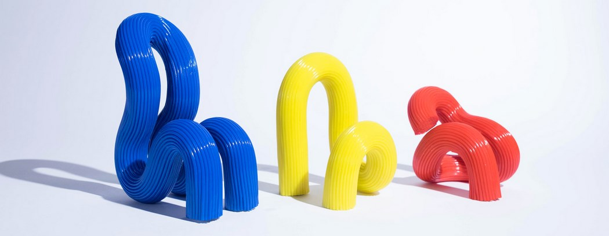
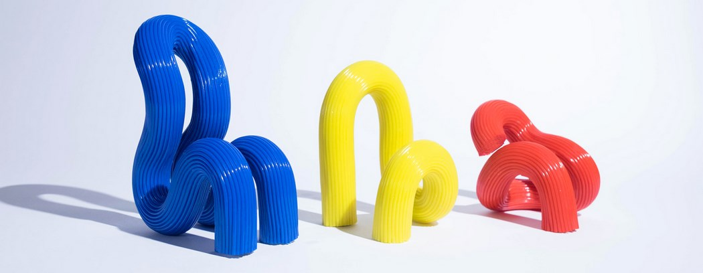

Ara Levon Thorose
Chaises « Tubular Group 01 »
Description : Ce siège sculptural est une incarnation audacieuse du design Pop Art et de l'esthétique Radical Design qui a émergé pour contester les formes rigides du modernisme. Il est conçu pour rompre délibérément avec l'orthodoxie de la chaise traditionnelle (pieds, assise, dossier distincts), embrassant une forme de ruban continu, fluide et hypnotique. Son esthétique repose sur cette ligne tubulaire sinueuse qui s'enroule et se replie sur elle-même dans un mouvement unique, défiant la gravité avec une élégance ludique et monumentale.
Structure : Il est réalisé techniquement en monobloc, probablement en polyéthylène rotomoulé ou en résine laquée, permettant cette fluidité ininterrompue sans joints apparents. La surface se distingue par une texture cannelée (ou striée) sur toute sa longueur, qui accentue la perception du mouvement et accroche la lumière de manière dynamique. La finition bleu électrique ultra-brillante renforce son aspect "plastique pop" optimiste et résolument artificiel.
Dimensions : H. (Hauteur totale) : 85 cm, L. (Largeur) : 70 cm, P. (Profondeur) : 90 cm.